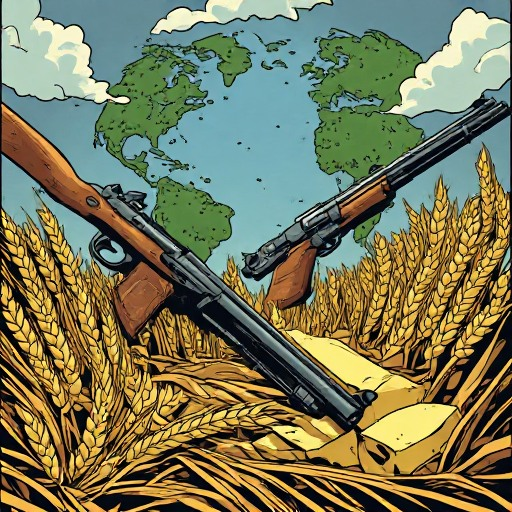

The Global DilemmaGuns or Butter
You rule one nation on a continent of rivals. Every worker you put into weapons is a worker not growing food — and you are scored on people, not territory.
PlayRuns in the browser. Nothing to install, and your game is saved in the page.
The dilemma
Chris Crawford built this in 1990 around a single tension. Your factories are fed by people, and so is your army; the same workers cannot do both. Arm yourself and you stop growing. Grow and you invite a neighbour to take what you have built.
Production has economies of scale — a factory of two hundred makes more than twice what a factory of a hundred does — so the strong get stronger, and a nation that falls behind struggles to catch up by industry alone. Conquest is the other way, and it costs you the very thing you are measured on: taking a province kills the people its farmland cannot feed.
What is in it
- Three difficulties
- Beginner offers 12 commodities, intermediate 19, expert all 33 — and expert adds the Economic Union, where nations pool their land and people for a turn under one of their number.
- Opponents that play
- Each rival weighs food against arms for itself, and reads the map for a frontier worth crossing. They form unions, resent whoever is winning, and remember who turned on them.
- A continent per name
- The continent's name is its seed, so the same name always makes the same world. Share a name and you share a map.
How it was rebuilt
The original is a DOS game from 1990. This is not an emulation of it but a reconstruction: the rules were recovered from the manual, from Crawford's own retrospective on the design, and from 644 output measurements taken from the binary under emulation, which is what fixes the productivity of every factory at every difficulty.
Where the sources disagreed with the readings, the readings won. Where nothing could be recovered, the gap is marked as design rather than archaeology. The mechanics specification records which is which, line by line.
Play the original
You can play the original game via emulater on AbandonWare.